ПроектШрифт Burek
ОписаниеBurek — акцидентный шрифт, вдохновлённый неспешным сербским летом: завтраком из соседней пекарни, кофе на балконе и ощущением, что можно никуда не торопиться. Массивные формы и плотный ритм букв создают выразительный характер для плакатов, упаковки, меню кафе, обложек и крупных заголовков.
РольШрифтовой дизайнер
Услуги
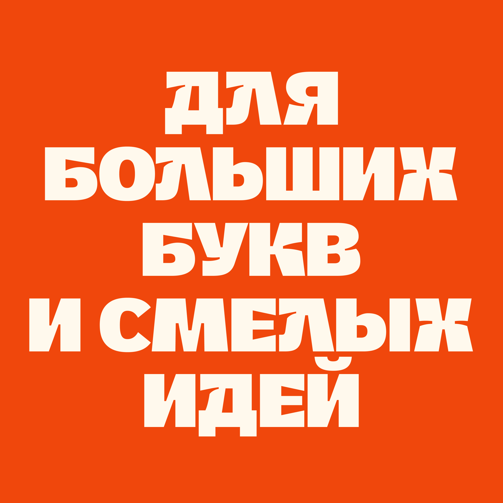
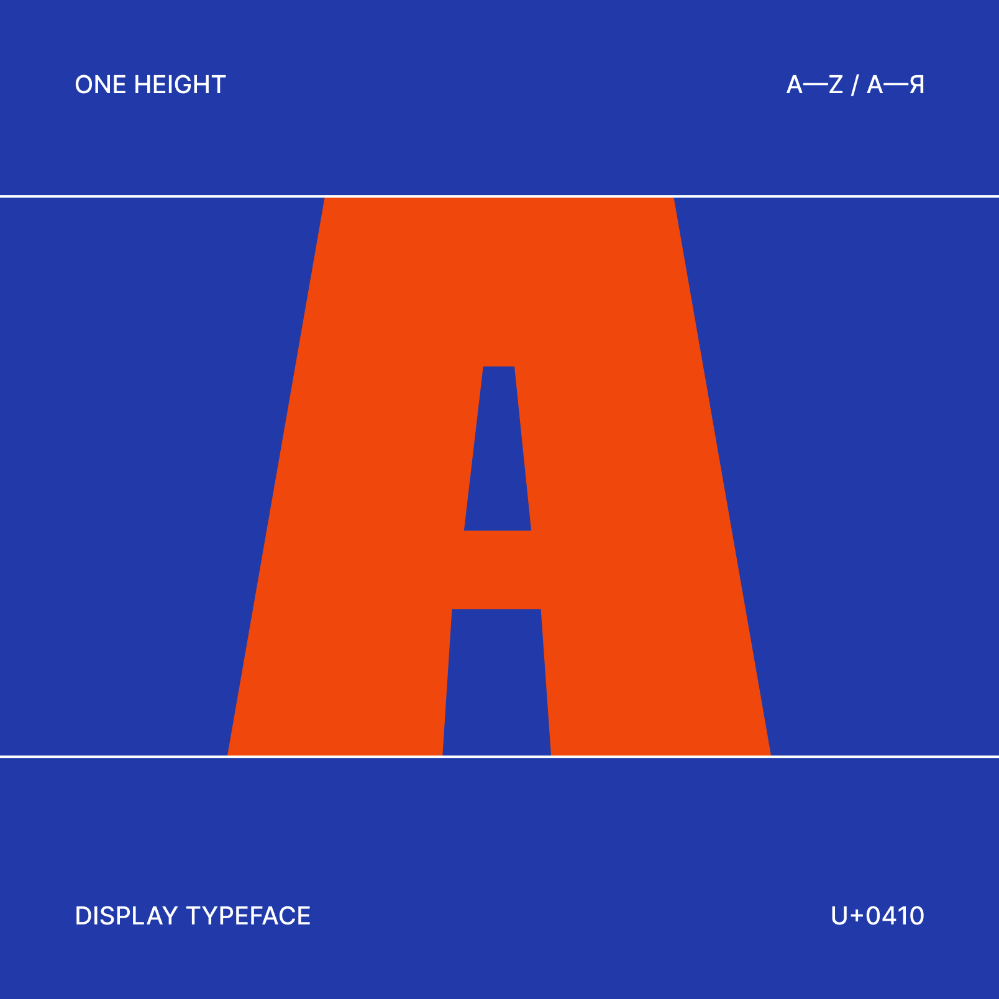
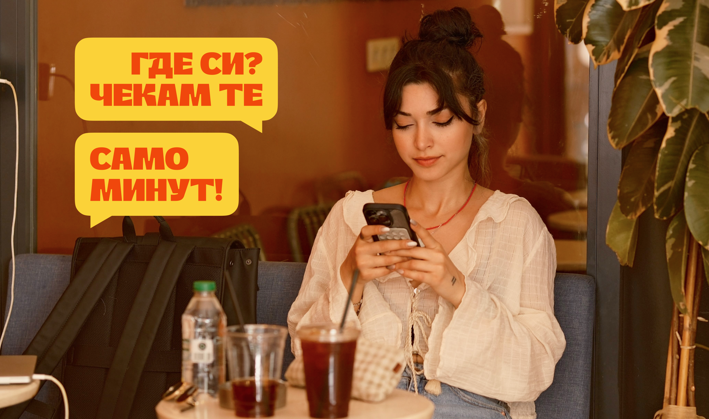
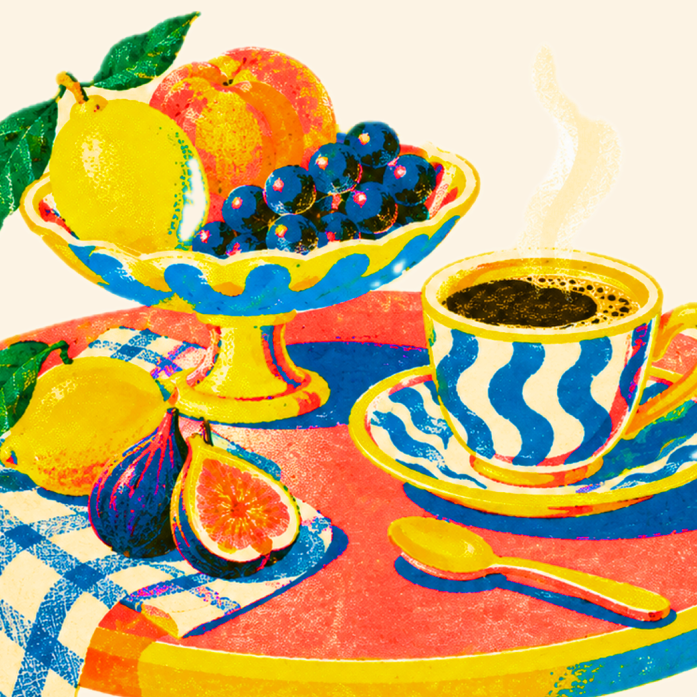
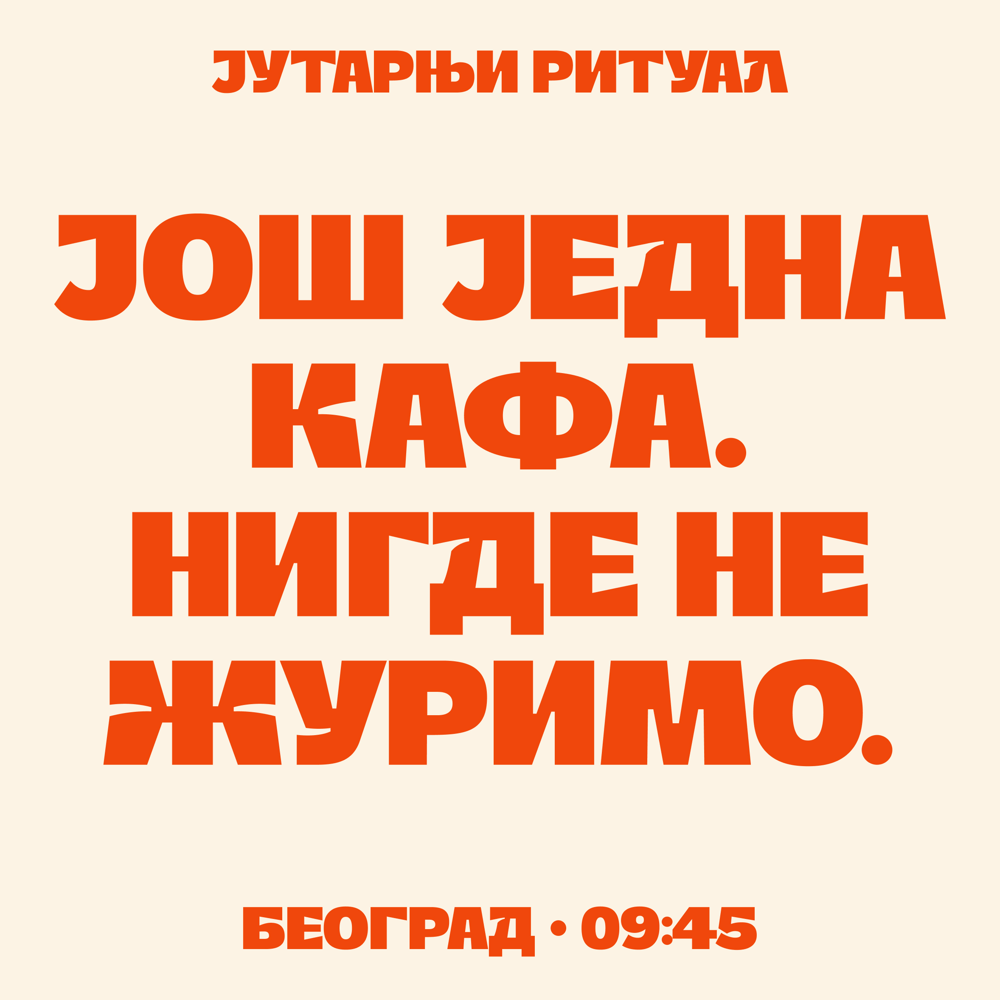
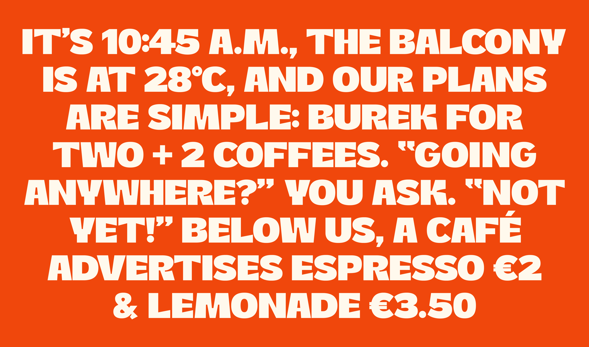
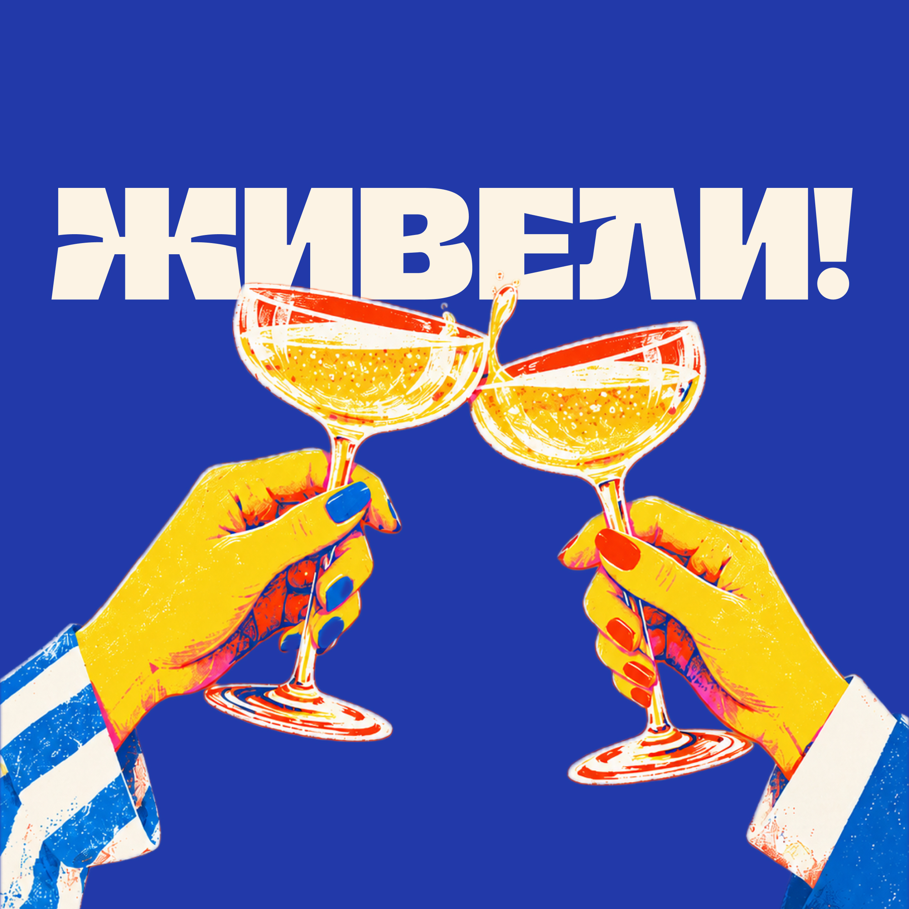
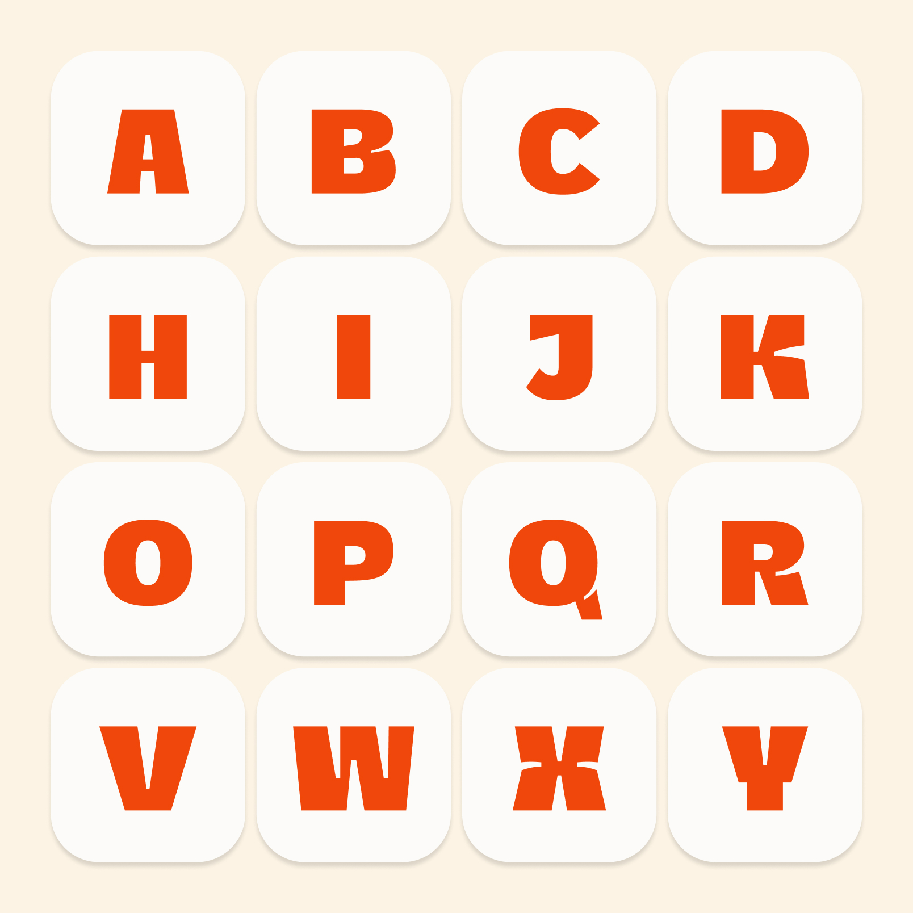
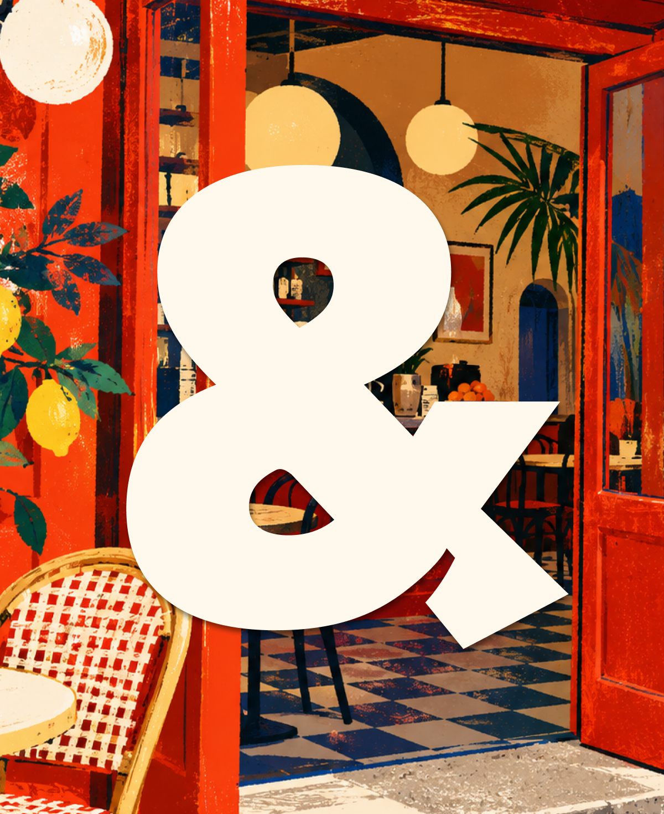
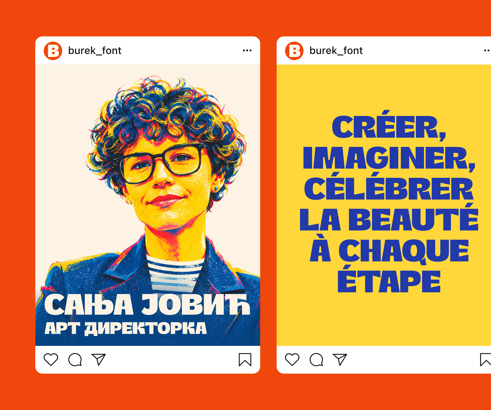
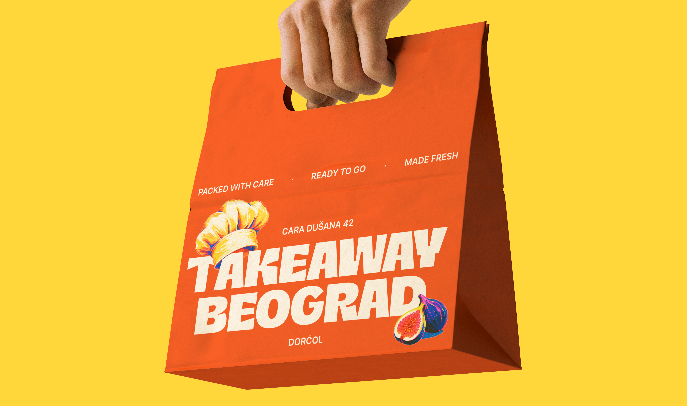
Скачать шрифт Burek
Одно начертание Black · OpenType (.otf) · 354 глифа
Бесплатно для личных и коммерческих проектов. Расширенная латиница и кириллица, включая сербскую; кириллические лигатуры СТ, ГД, ГЛ, ТД. Прописные и строчные знаки имеют формы заглавных букв.
Скачать шрифт Burek